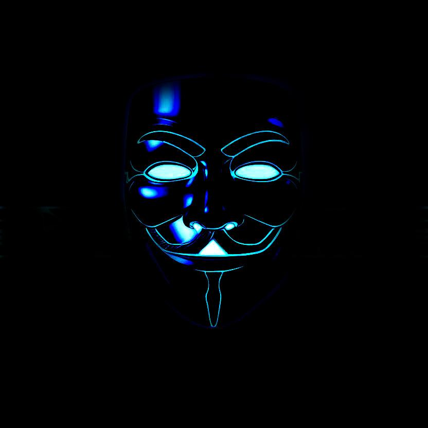

PRODUCER // DJ
Dunkle Uptempo-Sounds zwischen Grind, Glitch und Kontrolle.
Set-Fokus: Slow Uptempo mit Raum für Uptempo.

DISCOGRAPHY
FOR PROMOTERS & CLUBS
Der Set-Fokus liegt klar im Slow Uptempo — treibend, dunkel, kontrolliert. Auf Wunsch geht's nahtlos ins schnellere Uptempo-Terrain.
Live Sets